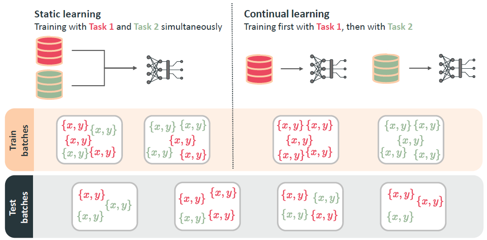
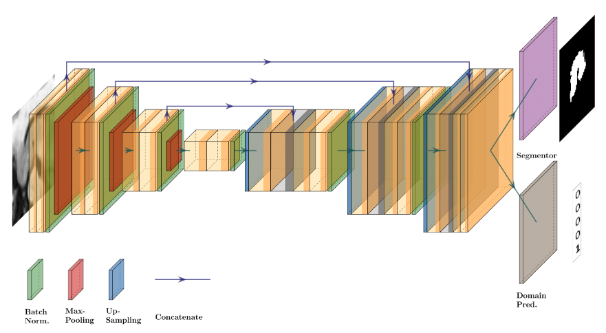
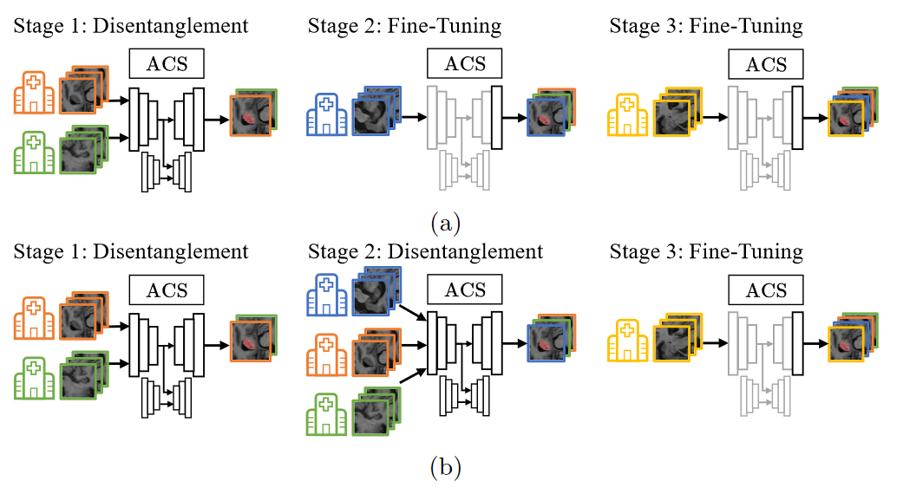
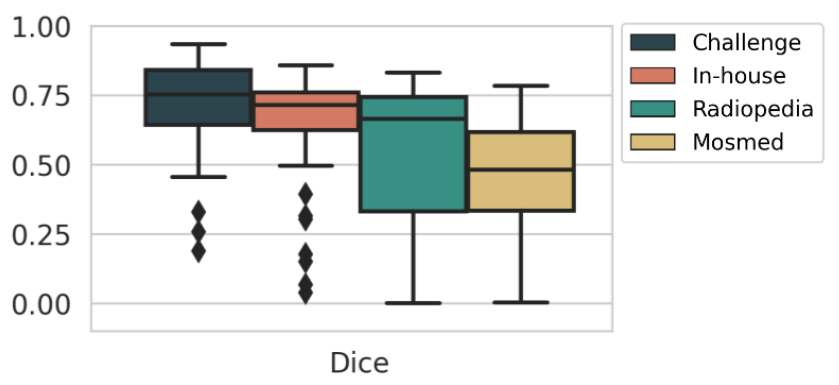
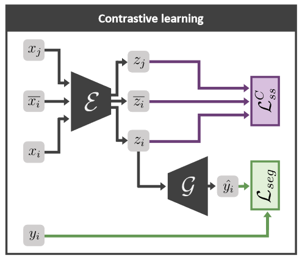
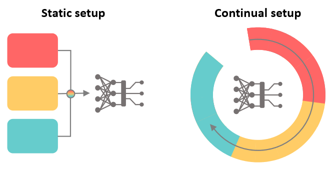

Publikationen
Publikationen, die aus dem EVA-KI Projekt entstanden sind.
Continual Learning for Diagnostic Radiology

Angenommen für RSNA 2021
The exhibit provides an overview of continual learning, the practice of training deep learning models with a sequence of distinct tasks, for diagnostic radiology. Continual learning is a major paradigm shift which the FDA is actively working to regulate. In diagnostic radiology, where a variety of scanners and acquisition protocols are used, training continuously allows to leverage heterogeneous data sources while adhering to data protection constraints. We start by describing why it is often necessary to train models continuously in the clinical practice and how continual learning differs from the static learning setup used in most deep learning evaluations. To illustrate the challenges and opportunities that continual learning poses, we clarify the concepts of catastrophic forgetting and transferability, as well as summarize current regulatory efforts.
How Reliable Are Out-of-Distribution Generalization Methods for Medical Image Segmentation?

Angenommen für GCPR 2021
The recent achievements of Deep Learning rely on the test data being similar in distribution to the training data. In an ideal case, Deep Learning models would achieve Out-of-Distribution (OoD) Generalization, i.e. reliably make predictions on out-of-distribution data. Yet in practice, models usually fail to generalize well when facing a shift in distribution. Several methods were thereby designed to improve the robustness of the features learned by a model through Regularization- or Domain-Prediction-based schemes. In this work, we evaluate OoD Generalization solutions for the problem of hippocampus segmentation in MR data using both fully- and semi-supervised training. We find that no method performs reliably in all experiments. Only the V-REx loss stands out as it remains easy to tune, while it outperforms a standard U-Net in most cases.
Adversarial Continual Learning for Multi-Domain Hippocampal Segmentation

Angenommen für MICCAI DART 2021
Deep learning for medical imaging suffers from temporal and privacy-related restrictions on data availability. To still obtain viable models, continual learning aims to train in sequential order, as and when data is available. The main challenge that continual learning methods face is to prevent catastrophic forgetting, i.e., a decrease in performance on the data encountered earlier. This issue makes continuous training of segmentation models for medical applications extremely difficult. Yet, often, data from at least two different domains is available which we can exploit to train the model in a way that it disregards domain-specific information. We propose an architecture that leverages the simultaneous availability of two or more datasets to learn a disentanglement between the content and domain in an adversarial fashion. The domain-invariant content representation then lays the base for continual semantic segmentation. Our approach takes inspiration from domain adaptation and combines it with continual learning for hippocampal segmentation in brain MRI. We showcase that our method reduces catastrophic forgetting and outperforms state-of-the-art continual learning methods.
Detecting when pre-trained nnU-Net models fail silently for Covid-19 lung lesion segmentation

Angenommen für MICCAI 2021
Automatic segmentation of lung lesions in computer tomography has the potential to ease the burden of clinicians during the Covid-19 pandemic. Yet predictive deep learning models are not trusted in the clinical routine due to failing silently in out-of-distribution (OOD) data. We propose a lightweight OOD detection method that exploits the Mahalanobis distance in the feature space. The proposed approach can be seamlessly integrated into state-of-the-art segmentation pipelines without requiring changes in model architecture or training procedure, and can therefore be used to assess the suitability of pre-trained models to new data. We validate our method with a patch-based nnU-Net architecture trained with a multi-institutional dataset and find that it effectively detects samples that the model segments incorrectly.
Self-supervised Out-of-distribution Detection for Cardiac CMR Segmentation

Angenommen für MIDL 2021
The segmentation of cardiac structures in Cine Magnetic Resonance imaging (CMR) plays an important role in monitoring ventricular function, and many deep learning solutions have been introduced that successfully automate this task. Yet due to variabilities in the CMR acquisition process, images from different centers or acquisition protocols differ considerably. This causes deep learning models to fail silently. It is therefore crucial to identify out-of-distribution (OOD) samples for which the trained model is unsuitable. For models with a self-supervised proxy task, we propose a simple method to identify OOD samples that does not require adapting the model architecture or access to a separate OOD dataset during training. As the performance of self-supervised tasks can be assessed without ground truth information, it indicates during test time when a sample differs from the training distribution. The proposed method combines a voxel-wise uncertainty estimate with the self-supervision information. Our approach is validated across three CMR datasets and two different proxy tasks. We find that it is more effective at detecting OOD samples than state-of-the-art post-hoc OOD detection and uncertainty estimation approaches.
What is Wrong with Continual Learning in Medical Image Segmentation?
 Continual learning protocols are attracting increasing attention from the medical imaging community. In a continual setup, data from different sources arrives sequentially and each batch is only available for a limited period. Given the inherent privacy risks associated with medical data, this setup reflects the reality of deployment for deep learning diagnostic radiology systems. Many techniques exist to learn continuously for classification tasks, and several have been adapted to semantic segmentation. Yet most have at least one of the following flaws: a) they rely too heavily on domain identity information during inference, or b) data as seen in early training stages does not profit from training with later data. In this work, we propose an evaluation framework that addresses both concerns, and introduce a fair multi-model benchmark. We show that the benchmark outperforms two popular continual learning methods for the task of T2-weighted MR prostate segmentation.